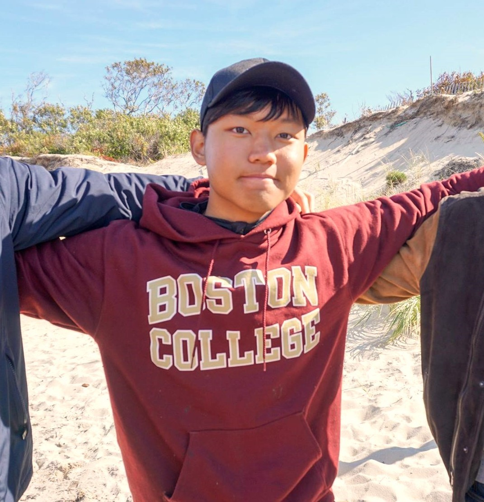

My name is Tion Wong. I'm a...
- Chinese-American citizen who's lived in Guangzhou, Hong Kong, New York, and Boston
- student in the Boston College Class of 2020 studying Computer Science and Math
- co-founder and current president of the Esports Club of Boston College and an avid gamer
- proud graduate of The Stony Brook School Class of 2016
- programmer with extensive experience in Python and Java and a passion for Software Development
- proficient Spanish speaker and native in Mandarin, Cantonese and English
- lover of alternative and classic rock and an avid guitarist since I was 10
- dedicated swimmer and certified lifeguard